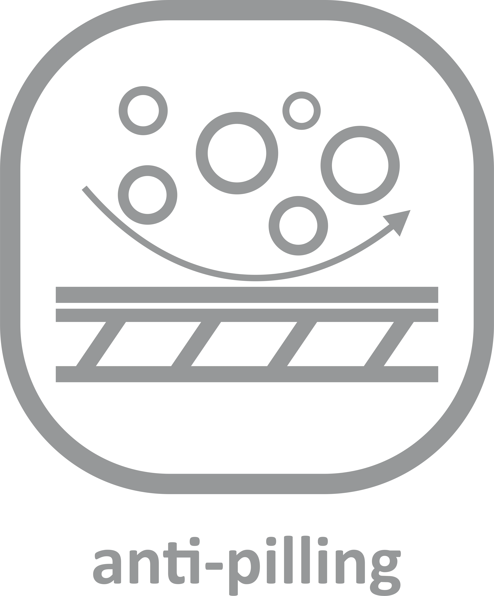
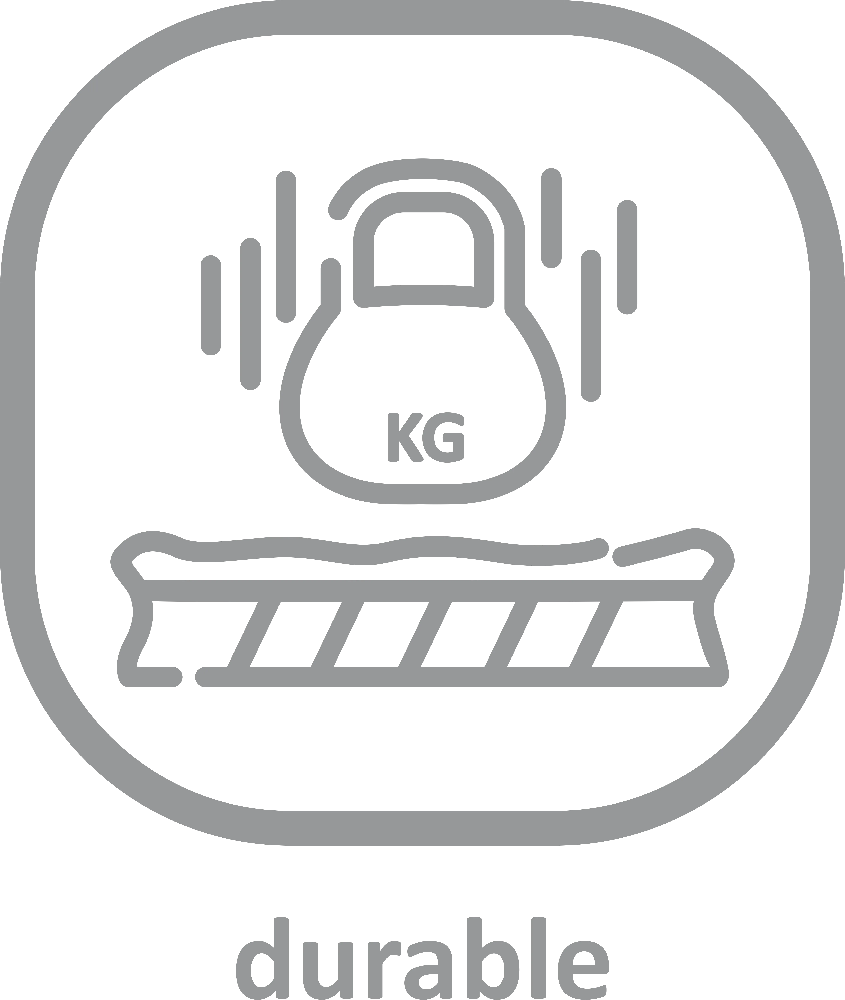

Experience unbeatable durability and performance with our HD Polytwill rugby fabric. Engineered for the demands of the game, this fabric offers superior strength and resilience, ensuring it stands up to the toughest matches. Say goodbye to pilling with our anti-pilling technology, guaranteeing your rugby wear maintains its quality wash after wash.
Whether you're scrumming down or making that game-winning tackle, our HD Polytwill fabric provides the durability you need to succeed on the field. Elevate your rugby experience with gear that's as tough and resilient as you are.
WEIGHT
STRETCH
BREATHABILITY
SOFTNESS
ANTI-PILLING

